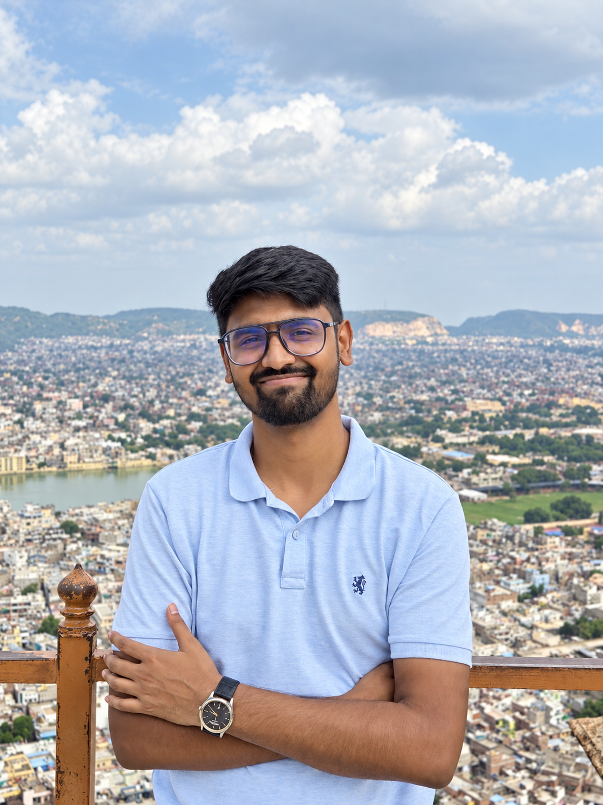

Life
Outside research, I enjoy learning, exploring new places, and connecting with people who care about climate and science.

Sundeep Kumar BaraikOutside research, I enjoy learning, exploring new places, and connecting with people who care about climate and science.